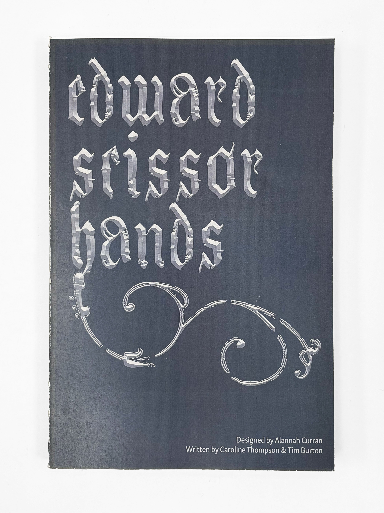

The characters' dialogue text boxes feature borders that symbolize their changing levels of conformity: thick borders represent extreme conformity, thin borders represent moderate conformity, and dashed borders represent the dismantlement of conformity. Edward's dialogue boxes feature no border, symbolizing both his immutable non-conformity to established norms and his inability to sort neatly into societal boxes (such as labels and roles). Edward's name is also typeset in a quirky, idiosyncratic font, which contrasts against the other characters' uniformly traditional serif names. Bound using perfect binding method.